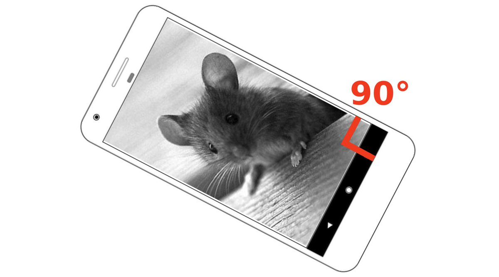
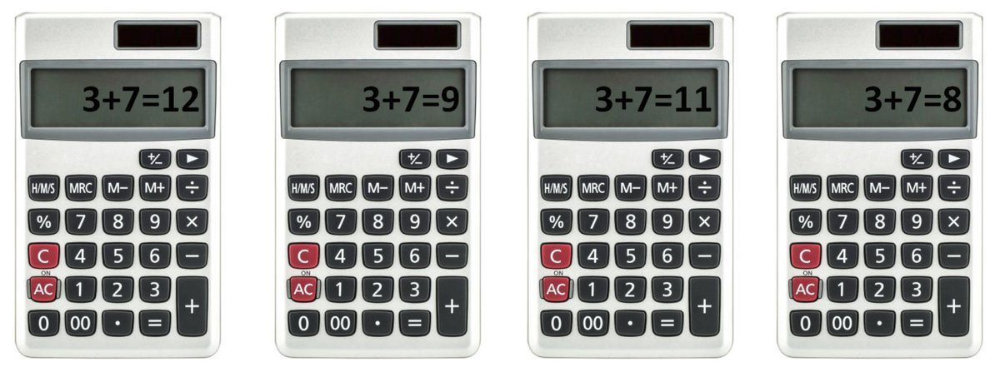
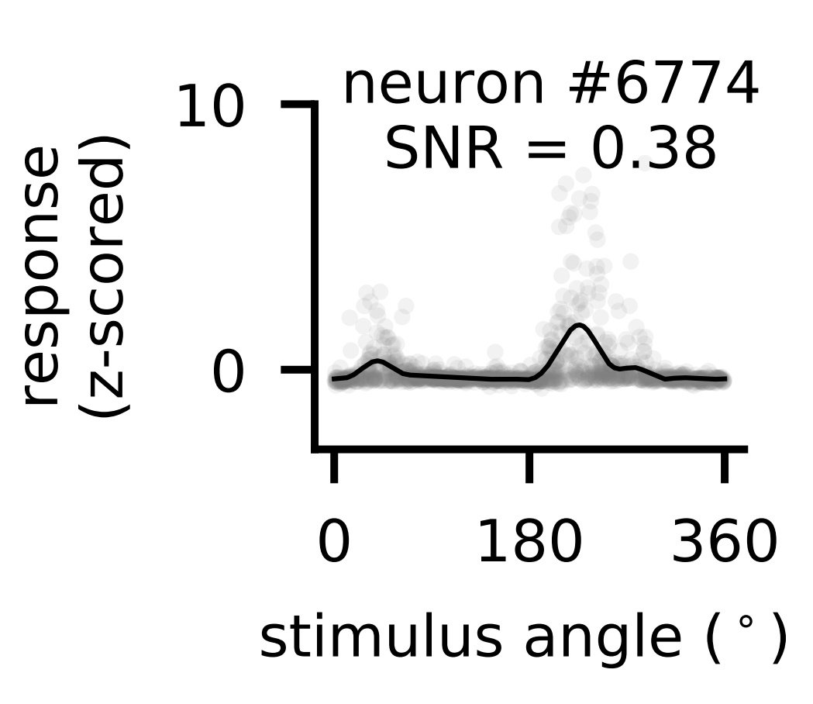
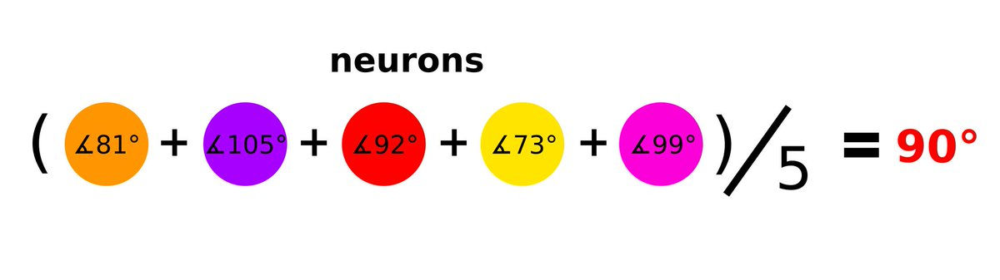
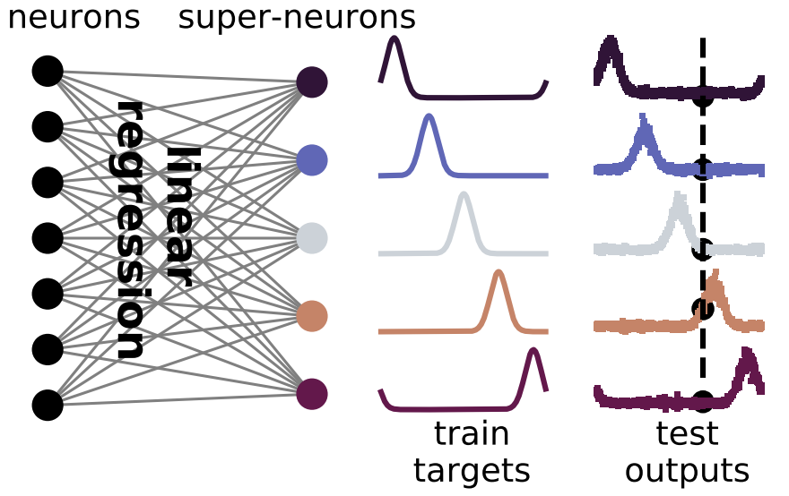
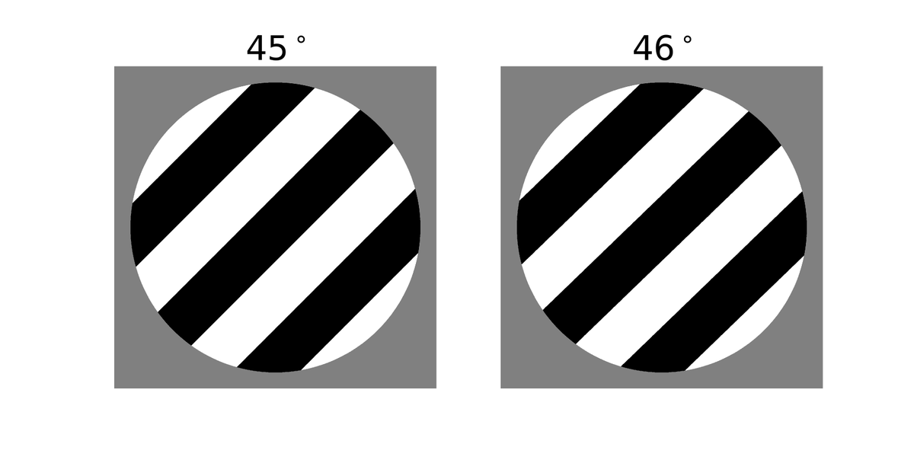
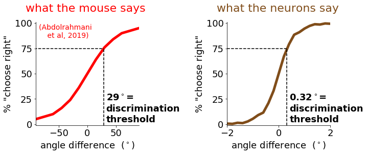
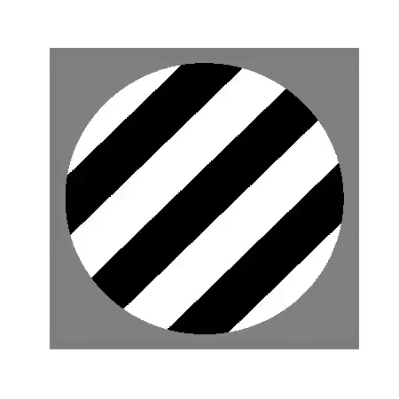
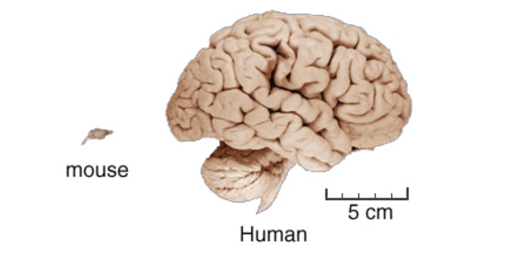
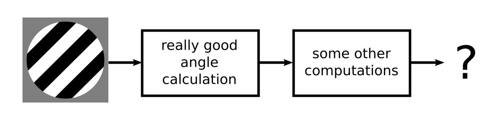

High precision coding in visual cortex
Visual cortex encodes stimuli highly precisely, far surpassing behavioral precision in mice and humans. In a task, visual cortex does not contribute to behavioral variability.
Individual neurons in visual cortex provide the brain with unreliable estimates of visual features. It is not known whether the single-neuron variability is correlated across large neural populations, thus impairing the global encoding of stimuli. We recorded simultaneously from up to 50,000 neurons in mouse primary visual cortex (V1) and in higher order visual areas and measured stimulus discrimination thresholds of 0.35° and 0.37°, respectively, in an orientation decoding task. These neural thresholds were almost 100 times smaller than the behavioral discrimination thresholds reported in mice. This discrepancy could not be explained by stimulus properties or arousal states. Furthermore, behavioral variability during a sensory discrimination task could not be explained by neural variability in V1. Instead, behavior-related neural activity arose dynamically across a network of non-sensory brain areas. These results imply that perceptual discrimination in mice is limited by downstream decoders, not by neural noise in sensory representations.
paper | talk | news article | preprint | data | code | original tweeprintThread:
- Single neurons in the brain can’t be depended on for reliable information. Here are some neurons from our recent study, recorded twice in response to the same visual stimuli. Different neurons are active at different times!
- Ask a neuron what angle the corner of your screen makes and it will say 75 degrees right now, 100 degrees in 5 minutes, and some other random number close to 90 every time you ask. 
- That is not how a computational device should work! Imagine if your calculator gave different answers every time

- This makes our lives as neuroscientists hard. Single measurements of neurons are not reliable (gray dots), and we need to repeat the measurements many times to average out the noise (black line).

- Maybe, we thought, the brain uses some kind of averaging over its millions of noisy neurons to get a clean estimate of what it’s looking at.

- If that was true, there would be “magical” combinations of neurons, which averaged would give just the right answer. Can we find these “magical” combinations by looking at the brain while it’s looking at our images? We used a microscope to record the activity of ~20,000 neurons simultaneously. Here is all of them from one session in random colors.

- We used linear regression to find weights for each neuron that combine their activities into “super-neurons”.

- These super-neurons were much less noisy than single neurons. In fact, the super-neurons could tell the difference between 45 and 46 degrees on 95% of the test trials. Can you?

- Imagine asking a mouse to distinguish such small differences… Our colleagues in @BenucciLab actually tried! The mouse could only tell apart angle differences of 29 degrees, which was about 100 times worse than the neurons.

- Even for humans it’s difficult, but I bet you can see the difference if I make the pictures into a movie.

- We conclude that mice have a lot of information in their brains, which are 1000x smaller than ours.

- They can’t communicate this information to us, but that does not mean they don’t use it, for example as a first step to another computation.

- We hope to find out in the future what these other computations might be. We publicly shared the data and code from this paper if anyone wants to dig further.
data: (figshare)
code: (github.com/MouseLand/stringer-et-al-2019)The End.
Powered by Quarto. © Marius Pachitariu & Carsen Stringer lab, 2023.